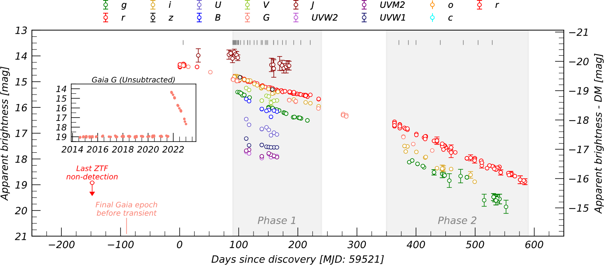
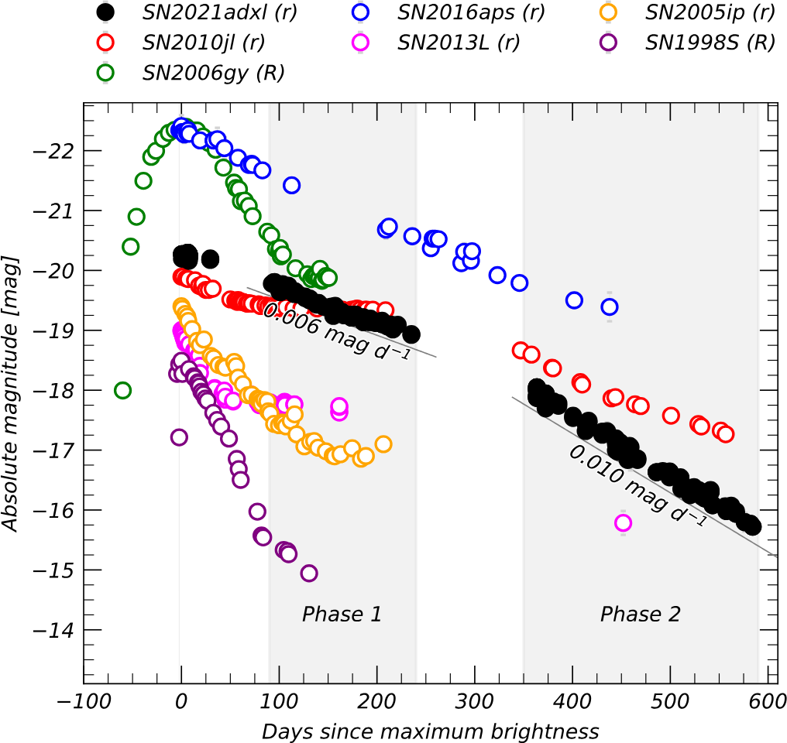

SN 2021adxl: A luminous nearby interacting supernova in an extremely low-metallicity environment
Brennan, S. J., et al. · Astronomy & Astrophysics 690, A259 (2024)
Overview
Background. Most well-studied core-collapse supernovae live in galaxies with roughly solar or higher metallicity. Explosions in extremely metal-poor hosts are rarer in the local sample, yet they matter for early cosmic star formation and for testing winds and mass loss when stars contain few heavy elements.
Science. SN 2021adxl is a bright, nearby supernova whose emission is strongly shaped by interaction with circumstellar gas. We present multi-band photometry, spectra, and host imaging to characterize the transient and its very low-metallicity environment.
Impact. The case shows whether interaction strengths, progenitor clues, and host properties match patterns seen at higher Z, which matters for extrapolating supernova physics to young galaxies and for diversifying the observational training set used in theory and cosmology-related systematics.
Key figuresfrom the paper




Full text (PDF)inline viewer
Embedded A&A PDF below. Scroll for light curves, spectra, and host maps. If the frame is blank (some sites block embedding), use the arXiv links above.